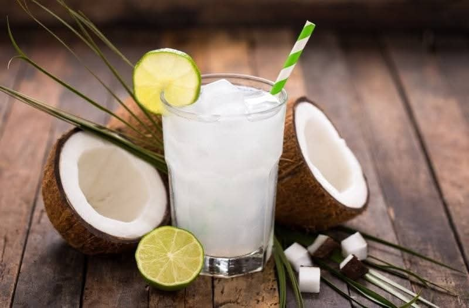
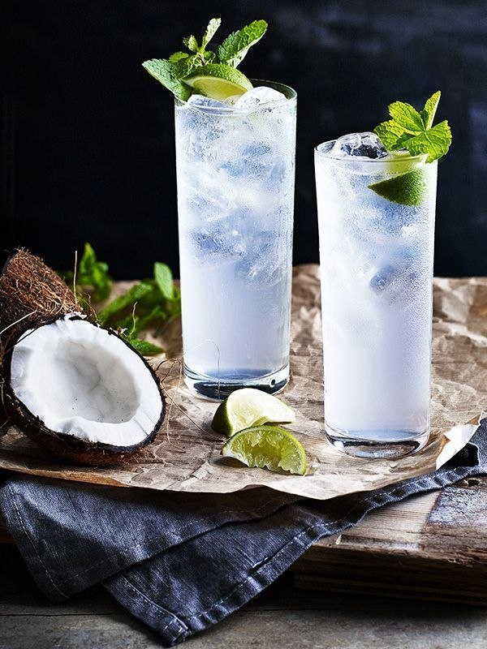
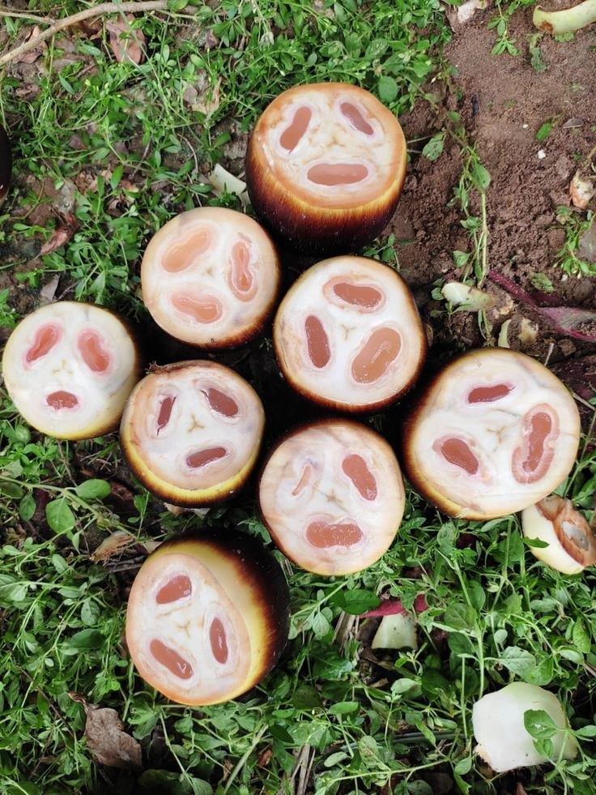
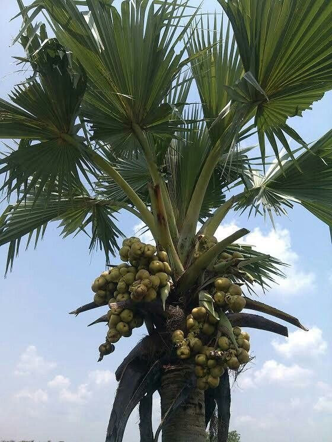
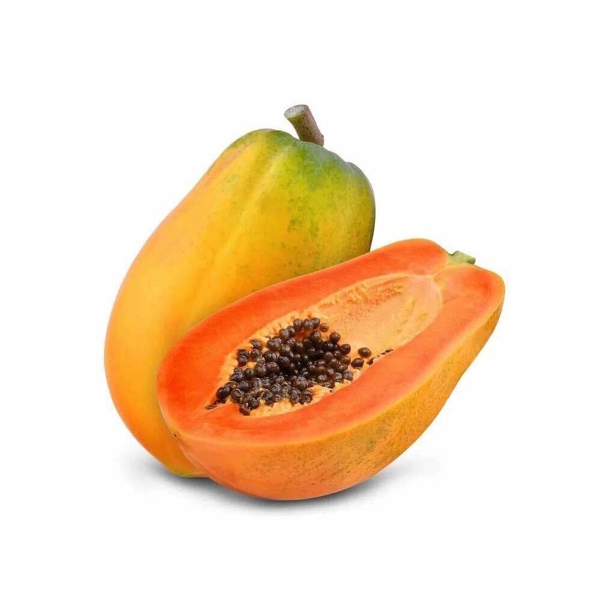
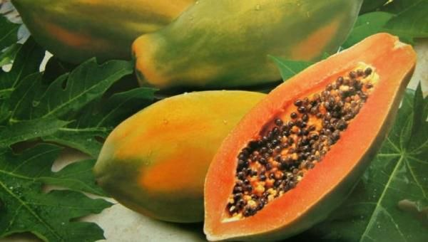
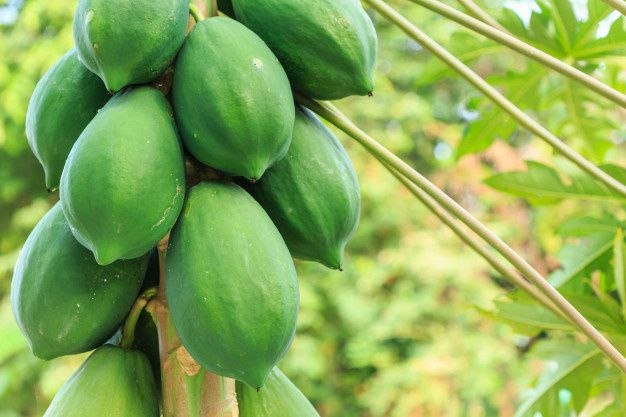

ဒေသထွက် သန့်ရှင်းလတ်ဆတ်သော အစားအစာများ
ကျွန်တော်တိုရဲ့ အမိမြန်မာပြည်ဟာ လှပလွန်းတဲ့ တောတောင်တွေ သဘာဝ အမွေအနှစ်တွေ၊ ဘိုးဘွားတွေရဲ့ အနုပညာ အမွေတွေတင်မက ရိုးရှင်းပေမယ့် အမြဲတမ်းတမိတဲ့ သဘာဝ လက်ဆောင်ပေါင်းများစွာ ပေါကြွယ်ရာနေရာလည်း ဖြစ်ပါတယ်။
အုန်းစိမ်းရည်
အုန်းစိမ်းရည်ဆိုတာ နွေပူပူ ဖုန်ထူထူမှာ ခရီးသွားရင်း အညာကို အလည်လာတဲ့အခါ မဖြစ်မနေ သုံးဆောင်ကြည့်သင့်တဲ့ သဘာဝဖျော်ရည် တစ်ခုပေါ့ဗျာ။
ကျန်းမာရေး အကျိုးကျေးဇူးများ
- သဘာဝ လျှပ်စစ်ဓာတ်ဆားများ ပါဝင်ခြင်း — ပိုတက်စီယမ်၊ ဆိုဒီယမ်နှင့် မဂ္ဂနီစီယမ်တို့ ကြွယ်ဝစွာ ပါဝင်သဖြင့် အားကစားလုပ်ဆောင်ပြီးချိန် သို့မဟုတ် နေပူထဲမှ ပြန်လည်ရောက်ရှိချိန်တွင် သောက်သုံးပါက ခန္ဓာကိုယ်ကို ချက်ချင်း လန်းဆန်းစေပါသည်။
- အစာခြေစနစ်ကို ကောင်းမွန်စေခြင်း — အမျှင်ဓာတ် အနည်းငယ် ပါဝင်ပြီး ခန္ဓာကိုယ်အတွင်းရှိ အဆိပ်အတောက်များကို ဖယ်ရှားပေးနိုင်စွမ်း ရှိပါသည်။
- ကျောက်ကပ် ကျန်းမာရေး — ကျောက်ကပ်တွင် ကျောက်တည်ခြင်းကို ကာကွယ်ပေးနိုင်တယ်ဟု ဆေးပညာအရ ယူဆကြပါသည်။
- အသားအရေ လှပစေခြင်း — အုန်းရည်တွင် ပါဝင်သော Antioxidants များက ဆဲလ်များကို ပြုပြင်ပေးပြီး အသားအရေကို စိုပြေစေပါသည်။
မြန်မာနိုင်ငံအလယ်ပိုင်းမှာရှိတဲ့ 'တွင်းမ'လို သဘာဝ ဆားခါးရေတွင်းကြီးတွေဆီ သွားလည်ရင်း ချိုအေးတဲ့ အုန်းရည်ရဲ့ အရသာကို ခံစားနိုင်ပါတယ်။


ထန်းရည်
မြန်မာနိုင်ငံအလယ်ပိုင်းရဲ့ အထူးခြားဆုံး သဘာဝလက်ဆောင်တစ်ခုဖြစ်တဲ့ ထန်းရည်ဟာ ရိုးရာယဉ်ကျေးမှုနဲ့ ဒွန်တွဲနေတဲ့ သဘာဝအဖျော်ယမကာတစ်ခု ဖြစ်ပါတယ်။
ထန်းပင်ရဲ့ အဖူးခိုင်ကနေ တစ်စက်ချင်းစီ စီးကျလာတဲ့ ထန်းရည်ချိုဟာ လန်းဆန်းမှုကို ပေးစွမ်းနိုင်ရုံသာမက ကျန်းမာရေးအတွက်လည်း များစွာအထောက်အကူပြုပါတယ်။
ကျန်းမာရေး အကျိုးကျေးဇူးများ
- စွမ်းအင်ဖြည့်တင်ခြင်း — သဘာဝဓာတ်ဆားများ၊ ပိုတက်စီယမ်နှင့် မဂ္ဂနီစီယမ်တို့ ကြွယ်ဝစွာပါဝင်သဖြင့် မောပန်းနွမ်းနယ်မှုကို ချက်ချင်းပြေပျောက်စေပြီး ခန္ဓာကိုယ်ကို လန်းဆန်းစေပါသည်။
- အဆိပ်ဖြေရှင်းခြင်း — အစာခြေစနစ်ကို အထောက်အကူပြုပြီး ခန္ဓာကိုယ်အတွင်းရှိ အဆိပ်အတောက်များကို ဖယ်ရှားပေးနိုင်စွမ်း ရှိပါသည်။
- အသားအရေနှင့် ကျန်းမာရေး — ဆေးဖက်ဝင်အာဟာရများအပြင် Antioxidants များပါဝင်သဖြင့် အသားအရေကို စိုပြေဝင်းပစေပါသည်။
မြန်မာနိုင်ငံအလယ်ပိုင်း၏ သဘာဝလက်ဆောင်ဖြစ်သော 'ထန်းရည်' ဟာ ကျန်းမာရေးနှင့်ညီညွတ်ပြီး ချိုအေးဆိမ့်မွှေးသည့် အရသာစစ်စစ်ကို ပေးစွမ်းနိုင်ပါသည်။


သင်္ဘောသီး
မြန်မာ့အိမ်ခြံဝင်းတိုင်းမှာ အလွယ်တကူ တွေ့ရှိနိုင်တဲ့ သင်္ဘောသီးဟာ အရသာချိုမြိန်ရုံသာမက သဘာဝကပေးတဲ့ အာဟာရဓာတ်တွေ ပြည့်ဝနေတဲ့ အသီးတစ်မျိုး ဖြစ်ပါတယ်။
အဝါရောင်သန်းနေတဲ့ အနှစ်သားလေးတွေမှာ ဗီတာမင်နဲ့ အင်ဇိုင်းဓာတ်တွေ ကြွယ်ဝစွာပါဝင်လို့ အစာခြေစနစ်ကို အထူးကောင်းမွန်စေပြီး ကိုယ်ခံအားကိုလည်း မြှင့်တင်ပေးပါတယ်။
ကျန်းမာရေး အကျိုးကျေးဇူးများ
- ကိုယ်ခံအားမြှင့်ခြင်း — ဗီတာမင် A၊ C နှင့် E တို့ ကြွယ်ဝစွာပါဝင်သဖြင့် ကိုယ်ခံအားစနစ်ကို မြှင့်တင်ပေးပြီး အမြင်အာရုံကို ကောင်းမွန်စေပါသည်။
- အစာခြေစနစ် ကောင်းမွန်ခြင်း — Papain ခေါ် အင်ဇိုင်းဓာတ် ပါဝင်သောကြောင့် အစာခြေစနစ်ကို ထူးကဲစွာ အထောက်အကူပြုပြီး ဝမ်းချုပ်ခြင်းကို ကာကွယ်ပေးပါသည်။
- နှလုံးနှင့် အသားအရေ — Antioxidants များစွာ ပါဝင်သဖြင့် နှလုံးကျန်းမာရေးကို ကာကွယ်ပေးသည့်အပြင် အသားအရေကို ကြည်လင်ဝင်းပစေပြီး အရွယ်တင်နုပျိုစေပါသည်။
လန်းဆန်းစိုပြေတဲ့ အသားအရေကို ပိုင်ဆိုင်စေရုံတင်မကဘဲ ကျန်းမာရေးအတွက် ဘက်စုံအကျိုးပြုတာကြောင့် နေ့စဉ်စားသုံးပေးသင့်တဲ့ မြန်မာ့မြေထွက် ရတနာတစ်ပါးပင် ဖြစ်ပါတယ်။


